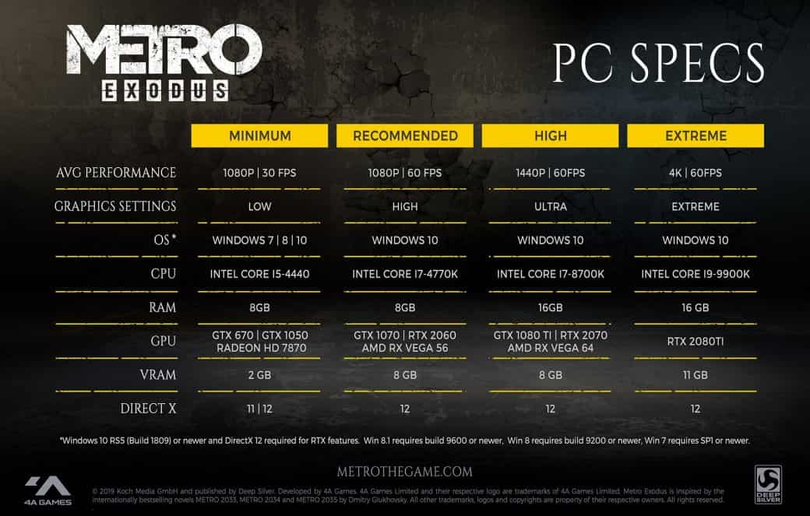

4A Games наконец-то поделилась системными требованиями Metro: Exodus для разных настроек графики. Разумеется, по сравнению с Last Light они сильно подскочили, но шутер все еще можно без особых проблем запустить на компьютерах средней комплектации, так что переживать не о чем!
Минимальные (1080p, 30 FPS):
- Операционная Система — Windows 7, 8 или 10;
- Процессор — Intel Core i5-4440;
- Видеокарта — NVIDIA GeForce GTX 670 (или GTX 1050) или AMD Radeon HD 7870;
- Оперативная память — 8 ГБ.
Рекомендуемые (1080p, 60 FPS):
- Операционная система — Windows 10;
- Процессор — Intel Core i7-4770k;
- Видеокарта — NVIDIA GeForce GTX 1070 (или RTX 2060) или AMD Radeon RX Vega 56;
- Оперативная память — 8 ГБ.
Высокие (1440p, 60 FPS):
- Операционная система — Windows 10;
- Процессор — Intel Core i7-8700k;
- Видеокарта — NVIDIA GeForce GTX 1080 Ti (или RTX 2070) или AMD Radeon RX Vega 64;
- Оперативная память — 16 ГБ.
Экстремальные (4K, 60 FPS):
- Операционная система — Windows 10;
- Процессор — Intel Core i9-9900k;
- Видеокарта — NVIDIA GeForce RTX 2080 Ti;
- Оперативная память — 16 ГБ.
Metro: Exodus выйдет 15 февраля 2019 года (изначально релиз должен был состояться 22 числа) на PS4, Xbox One и PC. Напомним, прежде студия выпустила сюжетный трейлер постапокалиптического шутера. А на прошлой неделе разработчики дали журналистам и блогерам возможность сыграть несколько часов на гигантской пустынной локации.